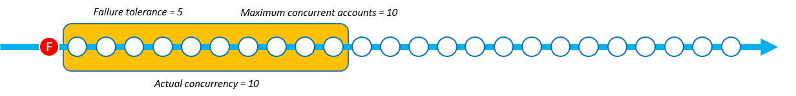

동시성 모드 파라미터
동시성 모드는 스택 세트 작업 중에 동시성 수준이 작동하는 방식을 선택할 수 있는 StackSetOperationPreferences의 파라미터입니다. 다음 모드 중에서 선택할 수 있습니다.
-
엄격한 내결함성: 이 옵션은 실패한 계정 수가 내결함성 +1 값을 초과하지 않도록 동시성 수준을 동적으로 낮춥니다. 초기 실제 동시성은 최대 동시 계정 값이나 내결함성 +1 값 중 낮은 값으로 설정됩니다. 그러면 실제 동시성은 실패 횟수에 비례하여 감소합니다. 이는 기본 설정 동작입니다.
-
소프트 내결함성: 이 옵션은 내결함성을 실제 동시성에서 분리합니다. 이렇게 하면 실패 횟수에 관계없이 최대 동시 계정 값으로 설정된 동시성 수준에서 스택 세트 작업을 실행할 수 있습니다.
엄격한 내결함성을 사용하면 스택 세트 작업이 실패할 때마다 동시성이 감소하므로 배포 속도가 느려집니다. 소프트 내결함성은 AWS CloudFormation 안전 기능을 계속 활용하면서 배포 속도에 우선 순위를 둡니다. 이를 통해 기존 리소스, 서비스 할당량 및 권한과 관련된 문제와 같은 일반적인 문제에 대한 스택 세트 작업 실패를 검토하고 해결할 수 있습니다.
StackSets 스택 작업 실패에 대한 자세한 내용은 일반적인 스택 작업 실패 이유을(를) 참조하세요.
최대 동시 계정 및 내결함성에 대한 자세한 내용은 스택 세트 작업 옵션을(를) 참조하세요.
각 동시성 모드의 작동 방식
아래 이미지는 스택 세트 작업 중에 각 동시성 모드가 작동하는 방식을 시각적으로 보여 줍니다. 노드 문자열은 단일 AWS 리전에 대한 배포를 나타내며 각 노드는 대상 AWS 계정입니다.
- 엄격한 내결함성
-
엄격한 내결함성을 사용하는 스택 세트 작업의 내결함성 값이 5로 설정되고 최대 동시 계정 값이 10으로 설정된 경우 실제 동시성은 6입니다. 내결함성 값인 5 +1이 최대 동시 계정 값보다 낮기 때문에 실제 동시성은 6입니다.
다음 이미지는 내결함성 값이 최대 동시 계정 값에 미치는 영향과 이 두 값이 스택 세트 작업의 실제 동시성에 미치는 영향을 보여 줍니다.

배포가 시작되고 실패한 스택 인스턴스가 있으면 안전한 배포 환경을 제공하기 위해 실제 동시성이 감소합니다. StackSets가 스택 인스턴스 1개를 배포하지 못하면 실제 동시성이 6에서 5로 감소합니다.


엄격한 내결함성은 실패한 스택 인스턴스 수에 비례하여 실제 동시성을 감소시킵니다. 다음 예에서 StackSets가 스택 인스턴스 2개를 더 배포하지 못하여 실패한 스택 인스턴스의 총 개수가 3개가 되면 실제 동시성이 5에서 3으로 감소합니다.

실패한 스택 인스턴스의 수가 정의된 내결함성 값 +1과 같으면 StackSets는 스택 세트 작업에 실패합니다. 다음 예에서 StackSets는 실패한 스택 인스턴스가 6개 있으며 내결함성 값이 5인 경우 작업에 실패합니다.

이 예에서 StackSets는 스택 세트 작업을 중지하기 전에 스택 인스턴스 9개(성공 3개, 실패 6개)를 배포했습니다.
- 소프트 내결함성
-
소프트 내결함성을 사용하는 스택 세트 작업의 내결함성 값이 5로 설정되고 최대 동시 계정 값이 10으로 설정된 경우 실제 동시성은 10입니다.

배포가 시작되고 실패한 스택 인스턴스가 있더라도 실제 동시성은 변경되지 않습니다. 다음 예에서 스택 작업은 1번 실패했지만 실제 동시성은 10으로 유지됩니다.
스택 인스턴스가 2번 더 실패한 후에도 실제 동시성은 10으로 유지됩니다.

실패한 스택 인스턴스가 내결함성 값을 초과하면 StackSets는 스택 세트 작업에 실패합니다. 다음 예에서 StackSets는 실패한 스택 인스턴스가 6개 있으며 내결함성 수가 5인 경우 작업에 실패합니다. 하지만 동시성 대기열의 나머지 작업이 완료될 때까지 작업은 종료되지 않습니다.

StackSets는 이미 동시성 대기열에 있는 스택 인스턴스를 계속 배포합니다. 즉, 실패한 스택 인스턴스의 수가 내결함성보다 클 수 있습니다. 다음 예에서 스택 세트 작업이 내결함성인 5에 도달했는데도 동시성 대기열에 아직 수행할 작업이 7개 남아 있으므로 실패한 스택 인스턴스가 8개 있습니다.

이 예에서 StackSets는 스택 작업을 중지하기 전에 스택 인스턴스 15개(성공 7개, 실패 8개)를 배포했습니다.
배포 속도에 따라 엄격한 내결함성과 소프트 내결함성 중에서 선택
엄격한 내결함성과 소프트 내결함성 모드 중에서 선택하는 것은 선호하는 스택 세트 배포 속도와 허용되는 배포 실패 수에 따라 달라집니다.
다음 표는 총 1000개의 스택 인스턴스를 배포하려고 시도하는 동안 각 동시성 모드가 실패한 스택 세트 작업을 처리하는 방식을 보여 줍니다. 각 시나리오에서 내결함성 값은 스택 인스턴스 100개로 설정되고 최대 동시 계정 값은 스택 인스턴스 250개로 설정됩니다.
StackSets는 실제로는 계정을 슬라이딩 윈도우로 대기열에 추가하지만(각 동시성 모드의 작동 방식 참조) 이 예에서는 각 모드의 속도를 보여 주기 위해 작업을 배치로 보여 줍니다.
엄격한 내결함성
엄격한 내결함성 모드를 사용하는 이 예에서는 각 이전 배치에서 발생하는 실패 수에 비례하여 실제 동시성을 낮춥니다. 각 배치에는 20개의 실패한 인스턴스가 있으며, 이로 인해 스택 세트 작업이 내결함성 값인 100에 도달할 때까지 다음 배치의 실제 동시성이 20만큼 낮아집니다.
다음 표에서 첫 번째 배치의 초기 실제 동시성은 스택 인스턴스 101개입니다. 실제 동시성은 최대 동시 계정(250)과 내결함성(100) +1 중 낮은 값이므로 101입니다. 각 배치에는 20개의 실패한 스택 인스턴스 배포가 포함되며, 이로 인해 각 다음 배치의 실제 동시성이 스택 인스턴스 20개만큼 낮아집니다.
| 엄격한 내결함성 | 배치 1 | 배치 2 | 배치 3 | 배치 4 | 배치 5 | 배치 6 |
|---|---|---|---|---|---|---|
| 실제 동시성 수 | 101 | 81 | 61 | 41 | 21 | - |
| 실패한 인스턴스 수 | 20 | 20 | 20 | 20 | 20 | - |
| 성공한 스택 인스턴스 수 | 81 | 61 | 41 | 21 | 1 | - |
엄격한 내결함성을 사용한 작업은 스택 세트 작업이 스택 인스턴스 100개인 내결함성에 도달할 때까지 5개의 배치에서 305개의 스택 인스턴스 배포를 완료했습니다. 스택 세트 작업은 실패하기 전에 205개의 스택 인스턴스를 성공적으로 배포합니다.
소프트 내결함성
소프트 내결함성을 사용하는 이 예에서는 실패한 인스턴스 수에 관계없이 최대 동시 계정 값인 스택 인스턴스 250개로 정의된 실제 동시성 수를 동일하게 유지합니다. 스택 세트 작업은 내결함성 값인 인스턴스 100개에 도달할 때까지 동일한 실제 동시성을 유지합니다.
다음 표에서 첫 번째 배치의 초기 실제 동시성은 스택 인스턴스 250개입니다. 최대 동시 계정 값이 250으로 설정되어 있고 소프트 내결함성 모드에서는 StackSets가 실패 횟수에 관계없이 이 값을 실제 동시성으로 사용할 수 있기 때문에 실제 동시성은 250입니다. 이 예에서는 각 배치에서 실패가 50번 발생하더라도 실제 동시성은 영향을 받지 않습니다.
| 소프트 내결함성 | 배치 1 | 배치 2 | 배치 3 | 배치 4 | 배치 5 | 배치 6 |
|---|---|---|---|---|---|---|
| 실제 동시성 수 | 250 | 250 | - | - | - | - |
| 실패한 인스턴스 수 | 50 | 50 | - | - | - | - |
| 성공한 스택 인스턴스 수 | 200 | 200 | - | - | - | - |
동일한 최대 동시 계정 값과 내결함성 값을 사용하여 소프트 내결함성 모드를 사용한 작업은 2개의 배치에서 500개의 스택 인스턴스 배포를 완료했습니다. 스택 세트 작업은 실패하기 전에 400개의 스택 인스턴스를 성공적으로 배포합니다.
AWS Management Console을(를) 사용하여 동시성 모드 선택
배포 옵션 설정 페이지에서 새 스택 세트 또는 기존 스택 세트의 동시성 모드를 선택할 수 있습니다.

AWS Management Console을(를) 사용하여 새 스택 세트를 생성하는 방법에 대한 자세한 내용은 스택 세트 생성을(를) 참조하세요.
AWS Management Console을(를) 사용하여 기존 스택 세트를 업데이트하는 방법에 대한 자세한 내용은 AWS CloudFormation 콘솔을 사용하여 스택 세트 업데이트을(를) 참조하세요.
AWS Management Console을(를) 사용하여 스택 세트를 삭제하는 방법에 대한 자세한 내용은 AWS Management Console를 사용하여 스택 세트 삭제을(를) 참조하세요.
AWS Command Line Interface을(를) 사용하여 동시성 모드 선택
다음 StackSets 명령에서 ConcurrencyMode 파라미터를 사용할 수 있습니다.
이러한 명령에는 ConcurrencyMode 설정을 사용할 수 있는 기존 파라미터 --operation-preferences이(가) 있습니다. ConcurrencyMode은(는) 다음 값 중 하나로 설정할 수 있습니다.
-
STRICT_FAILURE_TOLERANCE -
SOFT_FAILURE_TOLERANCE
다음 예에서는 STRICT_FAILURE_TOLERANCE ConcurrencyMode을(를) 사용하여 FailureToleranceCount이(가) 10으로 설정되고 MaxConcurrentCount이(가) 5로 설정된 스택 인스턴스를 생성합니다.
aws cloudformation create-stack-instances \ --stack-set-nameexample-stackset\ --accounts123456789012\ --regionseu-west-1\ --operation-preferences ConcurrencyMode=STRICT_FAILURE_TOLERANCE,FailureToleranceCount=10,MaxConcurrentCount=5
AWS Command Line Interface(CLI)를 사용하여 새 스택 세트를 생성하는 방법에 대한 자세한 내용은 스택 세트 생성을(를) 참조하세요.
AWS CLI을(를) 사용하여 기존 스택 세트를 업데이트하는 방법에 대한 자세한 내용은 AWS CLI를 사용하여 스택 세트 업데이트을(를) 참조하세요.
AWS CLI을(를) 사용하여 스택 세트를 삭제하는 방법에 대한 자세한 내용은 AWS CLI를 사용하여 스택 세트 삭제을(를) 참조하세요.